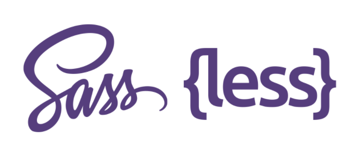
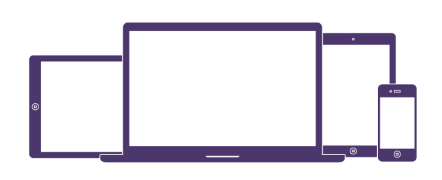
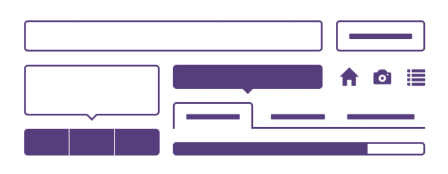

Preprocessors
Bootstrap ships with vanilla CSS, but its source code utilizes the two mist popular CSS
preprocessors, Less and Sass. Quickly get started with precompiled CSS
or build on the source

One framework, every device
Bootstrap easily and efficiently scales your websites and applications with a single code
base, from phones to tables to desktops with CSS media queries

Full of features
With Bootstrap, you get extensive and beautiful documentation for common HTML elements, dozens
of custom HTML and CSS components, and awesome jQuery plugins